기계설계산업기사 (2003-08-31 기출문제)
1과목: 기계가공법 및 안전관리
1. 지름 d=5 cm의 축을 7° 비틀림하는 경우 최대전단응력이 95 MPa라 하면 이 축의 길이 L은 몇 cm 인가? (단, 이 축의 전단탄성계수 G = 85 GPa 이다.)
- 237
- 273
- 287
- 294
(정답률: 28%)

2. 그림과 같이 외팔보의 자유단에 집중하중 5 kN과 모멘트 M을 작용시켰더니 자유단에서 0.17 cm의 처짐이 생겼다. 보의 길이가 100 cm, 탄성계수 E = 210 GPa, 단면 2차모멘트 Ⅰ= 600cm4이라면 자유단에 작용시킨 모멘트 M은 몇 N肢m 인가?
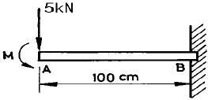
- 620
- 730
- 840
- 950
(정답률: 16%)
3. 단순보의 중앙에 집중 하중이 작용할 때 단면의 높이를 3배로 높게 할 경우 최대처짐량은 처음의 몇 배로 되는가? (단, 보의 단면은 직사각형 단면이다.)
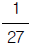
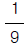
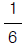
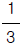
(정답률: 35%)
4. 지름 16mm, 길이 3m의 둥근봉이 30 kN의 축인장 하중을 받고 있다. 이 봉에 발생하는 인장응력은 몇 MPa 인가?
- 0.149
- 1.49
- 14.9
- 149
(정답률: 22%)
5. 어떤 봉이 인장력 P를 받아서 세로변형률 ε이 0.02 이고 이 봉의 탄성계수가 210 GPa 이라면 가로변형률 ε'는? (단, 포아송 비는 μ = 0.33 이다.)
- 0.0066
- 0.0047
- 0.0078
- 0.002
(정답률: 19%)
6. 기둥에서 단면적 A, 단면 2차모멘트 I, 단면 2차회전반경 k, 길이 L인 장주의 세장비는?
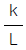
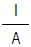
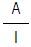
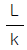
(정답률: 22%)
7. 그림과 같은 바깥지름이 d 이고, 안지름은
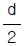
인 속이 빈 원형 단면의 극관성 모멘트(Ip)의 크기는?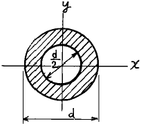
- 0.92 d4
- 0.092 d4
- 0.49 d4
- 0.049 d4
(정답률: 27%)
8. 동일 재료로 만든 길이 L, 지름 d인 축 A와 길이 2L, 지름 2d의 축 B를 같은 각도 만큼 비트는데 필요한 비틀림 모멘트의 비 TA/TB의 값은?
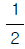
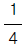
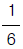
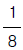
(정답률: 18%)
9. 그림과 같은 길이 ℓ = 2m인 외팔보에 300 N과 100 N 2개의 집중하중이 작용할 때 고정단에서의 반력은?
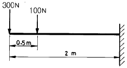
- 100 N
- 200 N
- 400 N
- 750 N
(정답률: 46%)
10. 전단력(F)과 굽힘 모멘트(M)에 관한 설명 중 맞는 것은?
- F가 일정하면 M도 일정하다.
- F가 직선적으로 변화하면 M도 직선적으로 변화한다.
- F가 직선적으로 변화하면 M은 포물선으로 변화한다.
- F가 일정하면 M은 곡선으로 변화한다.
(정답률: 38%)
11. 길이 2.2m, 단면 b絨h=20cm絨30cm인 단순보가 그림과 같이 집중하중을 받고 있다. 이 보에 발생되는 최대 굽힘 응력은 몇 MPa인가?
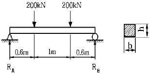
- 40
- 73
- 120
- 266
(정답률: 10%)
12. 그림과 같은 외팔보에서 최대 굽힘응력(σmax)은?
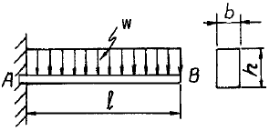
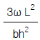
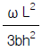
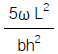
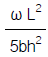
(정답률: 38%)
13. 지름 2cm, 프와송비 0.3, 탄성계수 200 GPa의 강재가 40 kN 의 인장력을 받을 때 지름은 얼마로 되는가?
- 1.7666㎝
- 1.8666㎝
- 1.8886㎝
- 1.9996㎝
(정답률: 7%)
14. 면적 모멘트법에 의한 보의 처짐각 θ, 처짐 δ를 구하는 식으로 올바른 것은? (단, A : 굽힘모멘트선도의 면적, EI : 굽힘강성계수,
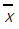
: 굽힘모멘트선도의 도심위치)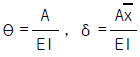
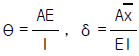
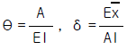
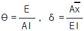
(정답률: 37%)
15. 단면 6㎝抉10㎝의 목재가 40 kN의 압축하중을 받고 있다．안전율을 5로 하면 실제 사용응력은 허용응력의 몇 %이며，최대 허용하중 Pa는 몇 kN 인가? (단，목재의 압축강도는 40 MPa 이다.)
- 8.33%, 4.7
- 8.03%, 470.2
- 0.83%, 0.47
- 83.33%, 48
(정답률: 17%)
16. 한개의 길이가 10 m로 제작된 레일로 철로를 건설하려고 한다. 해당지역의 기상측정 자료가 최고온도가 40℃이고, 최저온도가 -40℃로 되어있을 때, 온도변화 80℃에 따른 최대 길이 변화는 몇 mm 인가? (단, 레일의 선팽창계수는 11.5絨10-6/℃ 이다.)
- 3.2
- 6.2
- 9.2
- 12.2
(정답률: 25%)
17. 편심하중을 받는 단주에서 단면의 핵(core of section)을 중요시하는 이유로 다음 중 가장 적합한 것은?
- 철제(steel) 기둥은 압축에는 강하지만 인장에 약하므로 기둥전체에 인장응력의 발생을 방지하기 위함이다.
- 철제(steel) 기둥은 인장에는 강하지만 압축에 약하므로 기둥전체에 압축응력의 발생을 방지하기 위함이다.
- 콘크리트 기둥은 압축에는 강하지만 인장에 약하므로 기둥전체에 인장응력의 발생을 방지하기 위함이다.
- 콘크리트 기둥은 인장에는 강하지만 압축에 약하므로 기둥전체에 압축응력의 발생을 방지하기 위함이다.
(정답률: 38%)
18. 그림과 같은 길이 L= 2m인 단순보가 3 kN/m의 분포하중을 받고 있을 때 보 중앙에서의 굽힘 모멘트는 몇 N.m 인가?
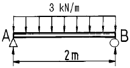
- 1500
- 2000
- 3000
- 6000
(정답률: 24%)
19. 다음 그림과 같은 단순지지보에 수직하중 P가 작용한다. 가동지점(roller support)에 작용하는 반력으로 옳은 것은?(단, M은 굽힘모멘트, H는 수평반력, V는 수직반력이다.)
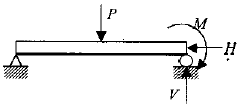
- M, H, V
- M, H
- H, V
- V
(정답률: 30%)
20. 그림과 같은 상, 하 대칭인 보에서 x축에 대한 단면계수는?
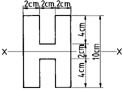
- 56.9 cm3
- 66.9 cm3
- 76.9 cm3
- 99.7 cm3
(정답률: 31%)
2과목: 기계제도
21. 비교측정의 특징 중 틀린 것은?
- 치수 계산이 생략된다.
- 자동화가 가능하다.
- 많은 양의 높은 정도를 비교적 용이하게 측정 할 수 있다.
- 측정범위가 넓고, 직접 제품의 치수를 읽을 수 있다.
(정답률: 56%)
22. 지그(jig)의 종류 중 쉽게 조작이 가능한 잠금 캠을 이용하여 장착과 장탈을 쉽게할 수 있도록 한 구조이며 클램핑력이 약하여 소형공작물 가공에 적합한 구조의 지그인 것은?
- 분할지그(indexing jig)
- 리프지그(leaf jig)
- 박스지그(box jig)
- 챈널지그(channel jig)
(정답률: 11%)
23. 가공물을 양극으로 하고 불용해성인 납, 구리를 음극으로 하여 전해액 속에 넣으면 가공물의 표면이 전기에 의한 화학작용으로, 매끈한 면을 얻을 수 있는 방법은?
- 전기화학가공
- 전해연마
- 방전가공
- 화학연마
(정답률: 59%)
24. 금속재료 표면에 고속으로 강철 볼을 분사시켜 표면은 소성변형하여 경화시키는 가공법은?
- 금속 침투법
- 숏 피닝
- 샌드 피닝
- 고주파 경화법
(정답률: 55%)
25. 평면에 줄질(filing)하는 방법을 분류할 때, 그 종류에 해당되지 않는 것은?
- 직진(直進)법
- 후진(後進)법
- 사진(斜進)법
- 병진(竝進)법
(정답률: 35%)
26. 바깥지름 80, 길이 120mm의 강재환봉을 초경바이트로 거친 절삭을 할때의 가공시간은? (단, 이송량 f=0.3 ㎜/rev, 절삭속도 v=70 m/min이다.)
- 약 1.44 min
- 약 3.45 min
- 약 5.54 min
- 약 7.54 min
(정답률: 16%)
27. 재료를 소성 가공할 때, 냉간가공과 열간가공의 구별은 어느 온도를 기준으로 정하는가?
- 단조온도
- 변태온도
- 담금질온도
- 재결정온도
(정답률: 75%)
28. 구성 인선을 감소시키는 방법 중 옳은 것은?
- 절삭속도를 고속으로 한다.
- 공구 상면 경사각을 작게 한다.
- 절삭깊이를 깊게 한다.
- 마찰저항이 큰 공구를 사용한다.
(정답률: 59%)
29. 소성 가공에서 바우싱거 효과(Bauschinger effect)란 무엇인가?
- 금속 재료가 먼저 받은 것과 반대 방향의 변형에 대하여는 탄성 한도나 항복점이 저하되는 현상이다.
- 금속 재료에서 한번 어떤 방향으로 소성 변형을 받으면 같은 방향으로 소성 변형을 일으키는데 대하여 저항력이 증대하여 간다는 현상이다.
- 시간과 더불어 변율이 커져가는 현상이다.
- 외력을 제거한 후 시간의 경과에 따라 잔류 변형이 감소하는 현상이다.
(정답률: 13%)
30. 압출 가공의 종류에 해당되지 않는 것은?
- 복식 압출
- 직접 압출
- 간접 압출
- 충격 압출
(정답률: 31%)
31. 재료를 열간 또는 냉간 가공하기 위하여, 회전하는 롤러 사이를 통과시켜 예정된 두께, 폭 또는 직경으로 가공하는 소성가공법은?
- 주조가공
- 압연가공
- 판금가공
- 단조가공
(정답률: 58%)
32. KCN 또는 NaCN와 관련이 있는 표면 처리법인 것은?
- 침탄법
- 질화법
- 화염경화법
- 청화법
(정답률: 30%)
33. 사인바(Sine bar)에서 정반면으로 부터 블록게이지의 높이를 각각 알고 있을 때, 각도 측정을 위해 필요한 것은?
- 양 롤러의 중심거리
- 바아의 폭
- 바아의 길이
- 롤러의 크기
(정답률: 66%)
34. 상하형이 서로 관계없는 요철을 가지고 있으며, 재료를 압축함으로써 상하면위에는 다른 모양의 각인이 되는 가공법은?
- 코이닝(coining)
- 엠보싱(embossing)
- 벤딩(bending)
- 드로잉(drawing)
(정답률: 25%)
35. 라이저(Riser)의 목적과 관계가 가장 먼 것은?
- 주물의 흔들림을 방지한다.
- 수축으로 인한 쇳물의 부족을 보충한다.
- 주형내의 공기 및 가스의 배출을 한다.
- 주물내의 기공 수축성 편석을 방지한다.
(정답률: 38%)
36. 미리 뚫어진 구멍을 넓히는 작업에 가장 적합한 공작기계는?
- 드릴링 머신
- 밀링 머신
- 슬로팅 머신
- 보링 머신
(정답률: 70%)
37. 절삭공구재료로 사용하는 스텔라이트의 주성분은?
- W - C - Co - Cr - Fe
- W - C - Cu - Fe
- Co - Mo - C - Fe
- Co - C - W - Cu - Fe
(정답률: 45%)
38. 연속유동형 칩을 얻고자 할 때, 틀린 조건은?
- 연성재료를 얇고 작은 칩으로 고속 절삭한다.
- 큰경사각과 날카로운 절인으로 인성온도를 최적 온도로 유지한다.
- 공구면을 매끈하게 연마하여 마찰력을 작게한다.
- 연성재료를 두껍고 큰 칩으로 저속 절삭한다.
(정답률: 44%)
39. 냉접(冷接)에 관하여 틀린 설명은?
- 가압용접의 일종이다.
- 상온(常溫)압접이라고도 한다.
- 주로 비철금속에 적용되나 서로 다른 금속끼리는 곤란하다.
- 전자통신기기의 부품결합에 적합하다.
(정답률: 35%)
40. 길이 측정기 중 레버(lever)를 이용하는 것은?
- 마이크로미터(micrometer)
- 다이얼 게이지(dial gauge)
- 미니미터(minimeter)
- 옵티컬 플랫(optical flat)
(정답률: 24%)
3과목: 기계설계 및 기계재료
41. 다음 재료 중 용융온도가 가장 낮아서 쉽게 주조하여 원하는 금형을 만들 수 있는 합금은?
- 초경 합금
- 구리 합금
- 아연 합금
- 알루미늄 합금
(정답률: 17%)
42. 탄소강에서 적열취성의 원인이 되는 원소는?
- 규소
- 망간
- 인
- 황
(정답률: 50%)
43. 재료에 일정한 응력을 가할때 생기는 변형량의 시간적 변화를 무엇이라 하는가?
- 피로
- 인장
- 크리프
- 압축
(정답률: 41%)
44. 4ton의 축방향 하중과 비틀림이 동시에 작용하고 있을 때 다음 중 가장 적합한 체결용 미터 보통나사 호칭은? (단, 허용 인장응력은 4.8㎏f/㎜2 이고, 비틀림 응력은 수직응력의 1/3 정도로 본다.)
- M58
- M48
- M84
- M64
(정답률: 48%)
45. 롤링 베어링에서 실링(sealing)의 주목적으로 가장 적합한 것은?
- 롤링 베어링에 주유를 주입하는 것을 돕는다.
- 롤링 베어링에 발열을 방지한다.
- 롤링 베어링에서 윤활유의 유출 방지와 유해물의 침입을 방지한다.
- 축에 롤링 베어링을 끼울 때 삽입을 돕는 것이다.
(정답률: 69%)
46. 전기동에 산소가 0.02 - 0.⑤% 함유되어 있는 가장 중요한 이유인 것은?
- 사용 중 수소 취성을 방지하기 위하여
- 전기 전도도를 향상시키기 위하여
- 전기동 제조 과정상 산소를 완전히 제거하는 것이 불가능하기 때문에
- 동중에 산소가 고용되어 불순물을 제거하기 위하여
(정답률: 38%)
47. 표면경화를 위한 침탄용 강재의 구비조건 중 틀린 것은?
- 장시간 가열해도 결정립이 성장하지 않아야 한다.
- 0.3% 이상의 고탄소강이어야 한다.
- 기공, 석출물 등이 경화시에 발생하지 않아야 한다.
- 담금 변형이 적고, 200℃ 이하의 저온에서 뜨임해야 한다.
(정답률: 34%)
48. 탄소공구강을 나타내는 기호는?
- STC
- STS
- STD
- SKH
(정답률: 74%)
49. 소결초경 합금 중 다이스용으로 쓰일 때 Co의 함량은 어느 정도인가?
- 5 - 10%
- 11 - 15%
- 16 - 20%
- 20 - 25%
(정답률: 36%)
50. 피치원의 직경이 40 ㎝인 기어가 600 rpm으로 회전하고 10 PS를 전달시키려고 한다. 이 피치원 상에 작용하는 힘은 약 몇 kgf인가?
- 29.9
- 44.8
- 59.7
- 119.4
(정답률: 22%)
51. 볼베어링에서 베어링하중을 2배로 하면 수명은 몇 배로 되는가?
- 2배
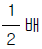
- 8배
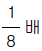
(정답률: 38%)
52. 판의 두께가 8mm, 인장강도가 45MPa인 연강판으로 만든 내경이 50mm인 원통관에 작용할 수 있는 내압의 크기는 몇 MPa인가? (단, 안전율은 4, 이음효율은 1, 부식여유는 1 이다.)
- 1.20
- 3.15
- 4.55
- 6.30
(정답률: 35%)
53. 스프링(spring)의 강도를 나타내는 것에 스프링 상수가 있다. 하중 W ㎏f 일 때 변위량을 δ ㎜ 라 하면 스프링 상수 k 는?
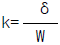
- k=δ W
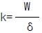
- k=W-δ
(정답률: 50%)
54. 판 두께가 15㎜, 리벳 지름이 22㎜, 피치는 50㎜, 리벳의 중심에서 판끝까지 길이가 30㎜의 한줄 리벳 겹치기 이음 했을 때 1피치당 하중을 1500㎏f으로 하면 판에 발생하는 전단응력과 리벳의 전단응력은 각각 몇 ㎏f/㎜2 인가?
- 1.67, 3.95
- 3.95, 1.67
- 2.55, 4.55
- 4.55, 2.55
(정답률: 18%)
55. 길이 6m의 실축에 400㎏f-m의 비틀림모멘트가 작용할 때 비틀림각이 전체길이에 대하여 약 3° 가 되기 위하여는 축의 지름을 몇 mm 정도로 하면 되는가? (단, 가로탄성계수 G = 810000 ㎏f/㎝2 이다.)
- 약 54㎜
- 약 65㎜
- 약 76㎜
- 약 87㎜
(정답률: 8%)
56. 다음 특수목적용강 중 절삭 공구용 특수강인 것은?
- Ni-Cr 강
- 불변강
- 내열강
- 고속도강
(정답률: 48%)
57. 키에서 축의 홈이 깊게 파여 축의 강도가 약하게 되기는 하나, 키와 키홈 등이 모두 가공하기 쉽고 키가 자동적으로 축과 보스사이에 자리를 잡을 수 있어 자동차, 공작기계 등의 축에 널리 사용되며 특히 테이퍼 축에 사용하면 편리한 키이는?
- 원뿔 키(cone key)
- 접선 키(tangential key)
- 드라이빙 키(driving key)
- 반달 키(woddruff key)
(정답률: 54%)
58. 6 m/sec의 속도로 회전하는 벨트의 긴장측의 장력이 300㎏f 이고, 이완측의 장력을 150 ㎏f라 하면 그 전달동력은 약 몇 ㎾인가?
- 12
- 7.7
- 8.8
- 26.5
(정답률: 27%)
59. 대형가공용 본체의 금형용 소재로 사용되는 실용 주철의 탄소함유량은?
- 1.7 - 2.5 % C
- 2.5 - 4.5 % C
- 4.5 - 5.5 % C
- 5.5 - 6.5 % C
(정답률: 50%)
60. 일반적으로 냉간가공과 열간가공의 기준은 무엇으로 하는가?
- 회복
- 재결정온도
- 가공도
- 결정입도
(정답률: 75%)
4과목: 컴퓨터응용설계
61. IGES 파일의 구성 section이 아닌 것은?
- directory entry section
- global section
- local section
- start section
(정답률: 43%)
62. 형상 모델에서 원하는 모양과 크기의 모델을 만들기 위하여 꼭 필요한 기본 요소가 아닌 것은?
- 크기
- 분석
- 위치
- 방향
(정답률: 58%)
63. 벡터 i , j , k가 각각 x,y,z 축 방향으로의 단위 벡터인 경우, 두 벡터 p = pxi +pyj +pzk 와 q =qxi +qyj +qzk 의 외적(cross-product) p xq 는?
- pxq =(pxqy-pyqx)i +(pyqz-pzqy)j +(pzqx-pxqz)k
- pxq =(pyqz-pzqy)i +(pzqx-pxqz)j +(pxqy-pyqx)k
- pxq =(pyqz-pzqy)i +(pxqz-pzqx)j +(pxqy-pyqx)k
- pxq =(pyqx-pxqy)i +(pzqy-pyqz)j +(pxqz-pzqx)k
(정답률: 32%)
64. 래스터 스캔 디스플레이에 관련된 용어가 아닌 것은?
- flicker
- Refresh
- Frame buffer
- RISC
(정답률: 52%)
65. 도형변환 행렬 [X Y]
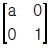
= [X逾 Y逾]에서 a > 1 이면 어떤 변환을 하는가?- X방향 확대
- Y방향 확대
- X방향 평행이동
- Y방향 평행이동
(정답률: 33%)
66. 호칭치수 3/8인치, 1인치 사이에 24산의 유니파이 가는 나사의 도시법은?
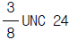
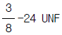
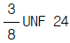
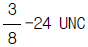
(정답률: 28%)
67. 물체의 일부분에 특수한 가공을 하는 경우 가공범위를 나타내는 표시방법은?
- 외형선에 가공방법을 명시한다.
- 외형선과 평행하게 그은 굵은 1점쇄선으로 표시한다.
- 가공하는 부분의 단면과 수직하게 2점쇄선으로 표시한다.
- 지시선을 표시하여 가공방법을 표시하고 굵은실선으로 나타낸다.
(정답률: 28%)
68. 리브(rib), 암(arm)등의 회전도시 단면을 도형내에 나타낼 때 사용하는 선은?
- 굵은 실선
- 굵은 1점쇄선
- 가는 파선
- 가는 실선
(정답률: 29%)
69. 보기와 같은 투상도의 명칭은?
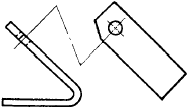
- 부분 투상도
- 보조 투상도
- 국부 투상도
- 회전 투상도
(정답률: 47%)
70. 컴퓨터간의 정보 교환을 보다 향상시키기 위해 사용하는 네트워크 기술에서의 통신규약을 무엇이라 하는가?
- PROTOCOL
- PARITY
- PROGRAM
- PROCESS
(정답률: 42%)
71. 무게중심을 표시하는데 사용되는 선은?
- 굵은실선
- 가는 1점쇄선
- 가는 2점쇄선
- 가는파선
(정답률: 20%)
72. 다음 나사의 도시법 중 옳은 것은?
- 수나사와 암나사의 골은 굵은 실선으로 그린다
- 암나사 탭구멍의 드릴자리는 60° 의 굵은 실선으로 그린다.
- 완전나사부와 불완전 나사부의 경계선은 굵은실선으로 그린다.
- 가려서 보이지 않는 부분의 나사부는 가는 1점쇄선으로 그린다.
(정답률: 40%)
73. 원의 정의 방법 중 틀린 것은?
- 일직선 위에 있는 3점에 의한 방법
- 중심과 반지름에 의한 방법
- 3점을 지나는 원
- 반지름과 두 개의 직선에 접하는 원
(정답률: 28%)
74. 다음 그림에서 점 P의 극좌표 값이 r=10, θ =30° 일 때 이것을 직교 좌표계로 변환한 P(x1,y1)를 구하면?
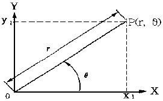
- P(8.66, 4.21)
- P(8.66, 5)
- P(5, 8.66)
- P(4.21, 8.66)
(정답률: 46%)
75. 다음 투상도법의 설명 중 옳은 것은?
- 제 1각법은 물체와 눈 사이에 투상면이 있는 것이다.
- 제 3각법은 평면도 아래에 정면도를 둔다.
- 제 1각법은 한국공업규격에서 채택하고 있는 투상법이다.
- 제 1각법은 정면도 아래에 저면도를 둔다.
(정답률: 63%)
76. 도형의 표시 방법 중 맞지 않는 것은?
- 가능한한 자연, 안정, 사용의 상태로 표시한다.
- 물품의 주요면이 가능한한 투상면에 수직 또는 평행하게 한다.
- 물품의 형상이나 기능을 가장 명료하게 나타내는 면을 평면도로 선정한다.
- 서로 관련되는 도면의 배열을 가능한 한 은선을 사용하지 않도록 한다.
(정답률: 59%)
77. 보기의 입체도를 화살표 방향에서 본 정면도로 가장 적합한 것은?
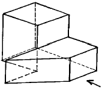
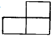
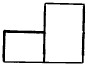
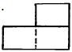
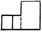
(정답률: 50%)
78. 도면에서 S가 나타내는 의미는 어느 것인가?
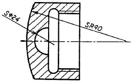
- 구
- 반지름
- 면
- 모서리면
(정답률: 67%)
79. 3차원 직교좌표계에서 두점 A(1, 2, 3), B(3, 4, 1)가 있을 때 다음 조건을 만족하는 점 P(x, y, z)의 좌표값은?
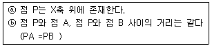
- P (1.5, 0, 0)
- P (2, 0, 0)
- P (2.5, 0, 0)
- P (3, 0, 0)
(정답률: 6%)
80. CAD 시스템의 입력 장치 중 미리 작성된 문자나 도형의 이미지 입력에 적당한 장치는?
- 디지타이저(digitizer)
- 키보드(key-board)
- 스캐너(scanner)
- 썸휠(thumb wheel)
(정답률: 43%)